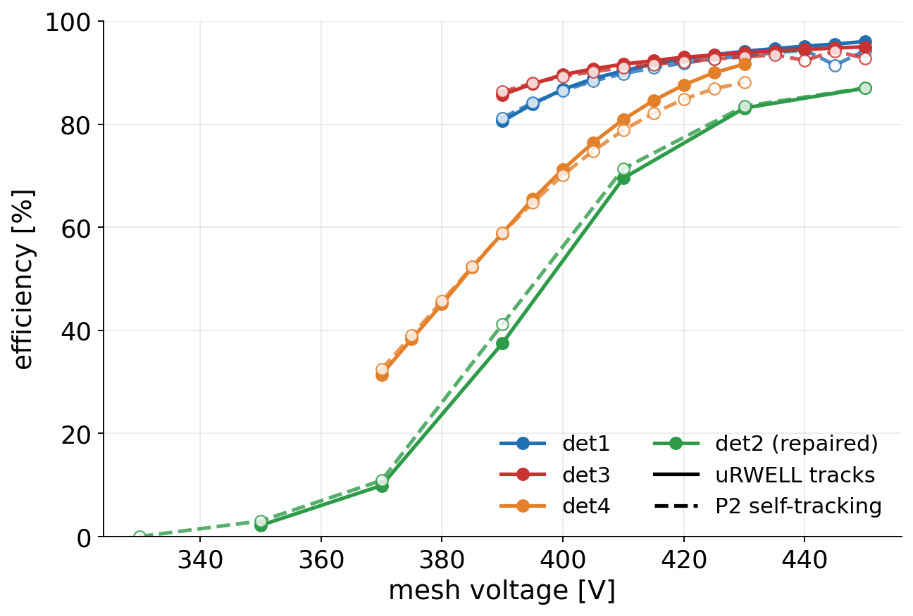
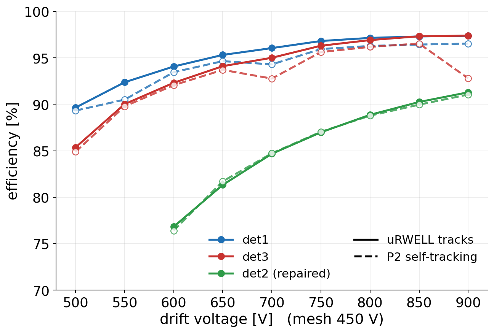
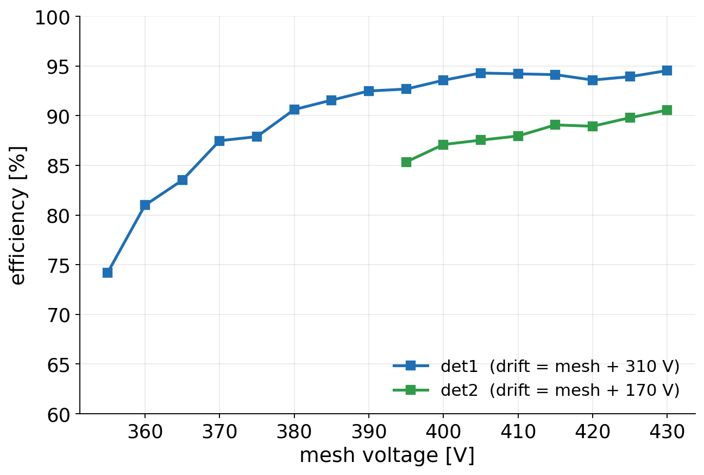
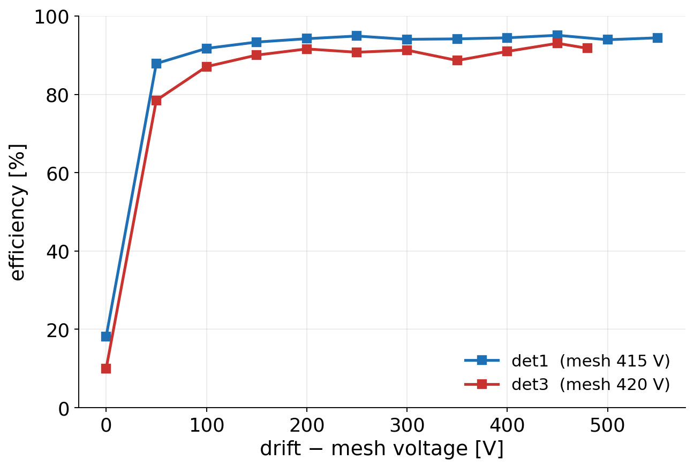
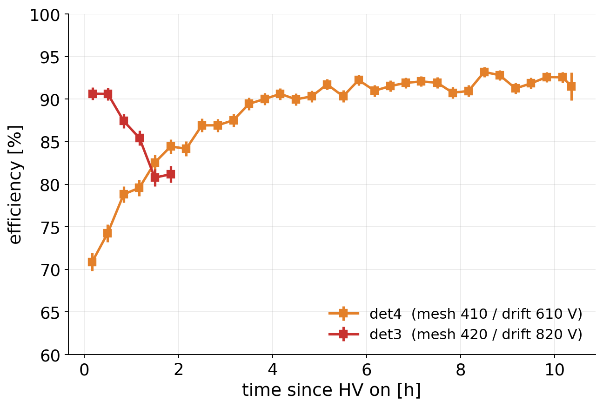
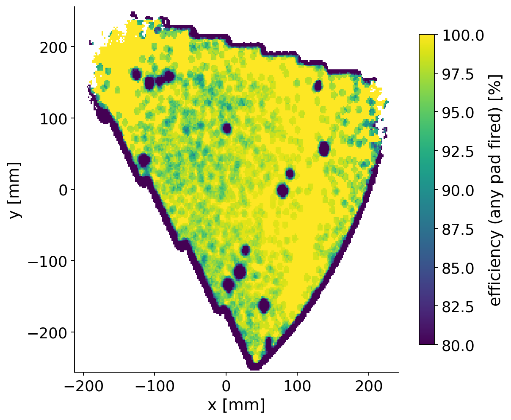

P2 BASKET chambers bulked at Saclay
det1 – det4: what we measured
Cosmic bench (Saclay, June–July 2026) and SPS H4 muon beam (CERN, 22–29 July 2026)
A. Kallitsopoulou · 14 September 2026 · DREAM readout only
The chambers and how they were tested
- P2 BASKET board: 1280 pads (~12 × 12 mm), 1697 cm² active area, 10 connectors
- Bulk Micromegas, insulation mask V1: 0.8 mm pillars on a 4 mm grid + 5 large 6.15 mm pillars → 3.8 % of the pad area
- 4 mm drift gap
| Cosmic bench | Beam | |
|---|---|---|
| particles | cosmic muons | SPS H4 muons |
| reference | M3 telescope | two uRWELL planes, or the other two P2 chambers |
| area probed | whole chamber | ~13 % beam spot |
| gas | Ar/iC₄H₁₀ 95/5 | Ar/CO₂/iC₄H₁₀ 93/5/2 |
The gases differ, so the gain at a given voltage differs. Compare curve shapes and plateaus between bench and beam, not voltages. Bench efficiency: track reconstructed within 40 mm of the telescope track, over the whole area (pillars included).
Summary
| Cosmic bench | Beam (station, dates) | Beam efficiency | |
|---|---|---|---|
| det1 | 93–95 % plateau from ~400 V mesh after the mesh-HV contact was redone |
P2_MID, whole test | 96 % at 450/700 V, 97 % at drift ≥ 800 V |
| det2 | 90 % (10 h run, 430/600 V) | P2_IN, 22–23 Jul: no signal (HV contact) repaired, back 26–27 Jul | 87–89 % at 450/750 V 91 % at 450/900 V, still rising |
| det3 | 91 % at start, lost efficiency within hours drift-electrode HV contact |
P2_OUT, whole test, new HV contact | 95 % at 450/700 V, 97 % at drift ≥ 800 V |
| det4 | 92 % after 4 h charging-up noisy |
P2_IN, 24–26 Jul leaky drift frame | 96 % at 450/700 V |
Once each chamber had a stable HV connection, all four bulks gave 91–97 % in the beam, and 95–97 % for det1, det3 and det4. None of the problems we met points at the bulk itself.
Beam numbers use the uRWELL reference and mesh / drift voltages as quoted. They are averaged over the working-point runs and rounded.
Beam: efficiency vs mesh voltage

- Solid: efficiency against the uRWELL tracks.
Dashed: the two other P2 chambers provide the track (how P2 will run, without an external reference). - The two methods agree within a few points.
- det1 and det3 reach 93–96 % at 430–450 V; det4 is still rising at the top of its scan.
- Drift = mesh + 250 V (det1, det3), + 200 V (det4), + 300 V (det2).
- det2 (repaired) turns on later and plateaus lower than the other three.
Beam: efficiency vs drift voltage

- Mesh fixed at 450 V.
- det1 and det3 reach 97 % at drift 800–900 V.
- det2 (repaired) is still rising at 900 V: 91 % with both references.
- In the same runs (26–27 Jul) det1 read only 91–92 % (97 % two days earlier), so part of det2's gap is run conditions, not the chamber.
Cosmic bench: efficiency vs voltage

mesh scans (drift field held fixed)

drift scans (mesh fixed)
- det1: clean turn-on, plateau 93–95 % from ~400 V. Drift plateau from ~150 V above the mesh.
- det2: 85 → 91 %, still rising at 430 V. det3: drift plateau ~91 %, measured before it lost its drift HV.
- No bench mesh scan exists for det4.
Cosmic bench: stability and uniformity

efficiency vs time at fixed HV

det1, 18 h at 415/615 V (5 mm sliding window)
- det4 charges up: 71 → 92 % over the first ~4 h, then stable.
- det3 drops 91 → 81 % in 2 h at fixed HV. It later gave no signal at all; the cause was the drift-electrode HV contact.
- det1 map: uniform over the whole fan. Five of the dark spots are the large support pillars. We have not traced the remaining isolated spots to the bulk.
What went wrong, and where it came from
| Symptom | Cause | Bulk-related? | |
|---|---|---|---|
| det1 | gain collapsed intermittently (early July, bench) | mesh HV contact; repaired | no — HV connection |
| det2 | no signal at first beam installation | HV contact; repaired, then took data | no — HV connection |
| det3 | efficiency lost within hours at fixed HV (bench) | drift-electrode HV contact; worked in the beam with a new contact | no — HV connection |
| det4 | noisy on the bench; long charging-up | leaky drift frame seen at the beam | no — drift frame |
Every failure was in the HV connections or the drift frame, which is our assembly. The most useful change for the next chambers is a robust, reproducible HV contact to the mesh and to the drift electrode.
Take-aways for the bulk production
- All four Saclay bulks work. 95–97 % efficiency in the beam for det1, det3 and det4; det2 reached 91 % after its repair, still rising with drift voltage.
- Efficiency is uniform across the whole fan on the bench (det1). The support pillars are visible but cost little: the pillar area is 3.8 %, and the bench misses only ~3 % of tracks with no signal at all.
- Efficiency against the other P2 chambers agrees with the external reference, so the chambers can run P2-style, without extra tracking.
Not covered here: VMM readout (under separate study), timing, and bench mesh scans for det3 (degrading at the time) and det4 (none taken). Numbers are from the August 2026 reprocessing of the bench data and from the July beam analysis.